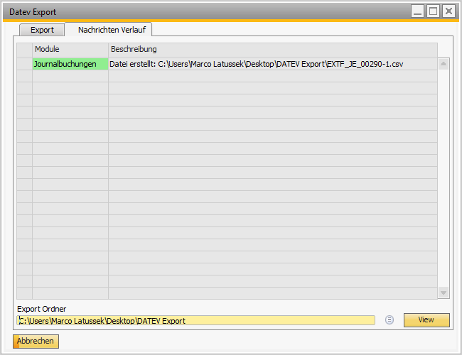

DATEV Posting Export (Datev Export)
Overview
The Versino Datev Export Module is the central interface for exporting SAP Business One data to the DATEV format. It enables complete data exchange, including postings, master data (customers, vendors, G/L accounts), and payment information, and is specifically optimized for German accounting requirements.
Access to the module: You can find the export dialog under Versino Financial Suite > DATEV Export/Import > DATEV Export. The export logs can be viewed under Versino Financial Suite > Protocols > Export Log.
Advantages of the Module
- Comprehensive Data Integration: Exports not only journal entries but also all relevant master data and payment terms for a complete data handover.
- Intelligent Status Management: Effectively prevents duplicate exports through automatic status tracking for each posting and ensures complete traceability.
- Quality Assurance: Detailed logging, pre-export validation, and transparent error handling ensure data quality.
Main Features
Comprehensive Data Export
The module exports not only journal entries but also all relevant master data to ensure a complete data transfer to your tax advisor:
- Journal Entries
- Customer and Vendor Master Data
- G/L Account Descriptions
- Payment Terms
Intelligent Export Status Management
Each posting receives an export status to avoid duplicates and ensure traceability. This status is displayed directly in the journal entry.
Detailed Filtering Options
Extensive filters are available for the posting export to define the data volume precisely. You can filter by date type (posting or document date), period, posting type, and especially by export status.
Logging and Monitoring
All export processes are recorded in detail in a protocol tab. This helps to monitor success and to quickly identify and analyze any errors.
Application: Step-by-Step
Exporting Postings and Master Data
- Navigate to Versino Financial Suite > DATEV Export.
- Select the Data Types to be exported (e.g., Journal Entries, Customers/Vendors).
- Define the desired Time Period and the Date Type.
- Set the filter for "Posting Status" to "Only not exported" to avoid duplicates.
- Select the Target Directory for the export file.
- Click on "Start Export". The postings are exported and automatically marked as "exported" in SAP B1.
Checking the Export Log
After the export, switch to the Protocol Tab. Here you will see a detailed, color-coded record of all operations and can analyze any error messages.
Changing Export Status Manually
Open the relevant journal entry in SAP Business One. In the "Financial Suite" tab, you can manually adjust the export status, for example, to allow a re-export.
General Application Tips
- Export Strategy: Perform regular exports (e.g., monthly) to keep data volumes manageable. Use descriptive export paths for better organization.
- Quality Check: After each export, check the Protocol for warnings or errors. Validate exports with small time periods before processing large amounts of data.
- Status Management: Use the status filters specifically. To correct a faulty export, you can manually reset the status and re-export only the failed postings.
Troubleshooting
Problem: Export fails with a validation error.
Solution: Check the protocol for details. Common causes are closed posting periods, missing account or tax assignments, or inconsistent charts of accounts. Analyze the error message in the protocol tab.
Problem: The created export files are incomplete or faulty.
Solution: Ensure you have write permissions for the chosen export directory and that there is sufficient disk space. Check the export period.
Problem: The export status of a posting is not updated.
Solution: Check your user permissions for modifying journal entries. Ensure that the add-on is installed correctly. In an emergency, the status can be changed manually in the journal entry.
Problem: The export dialog does not open.
Solution: Check your user permissions for the module. Ensure that the Financial Suite has loaded correctly and the menu item is active.